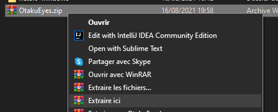
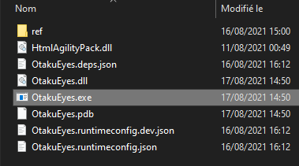
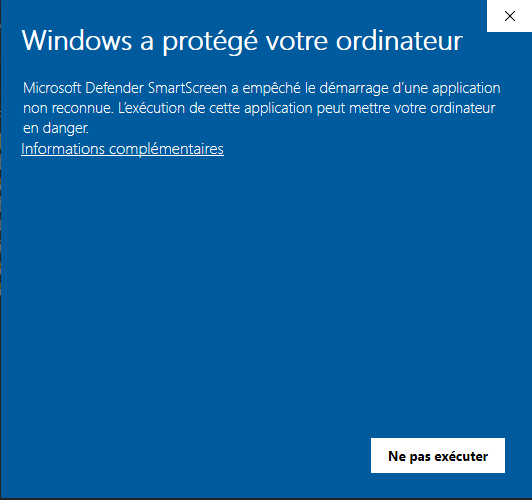
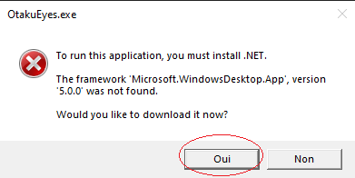
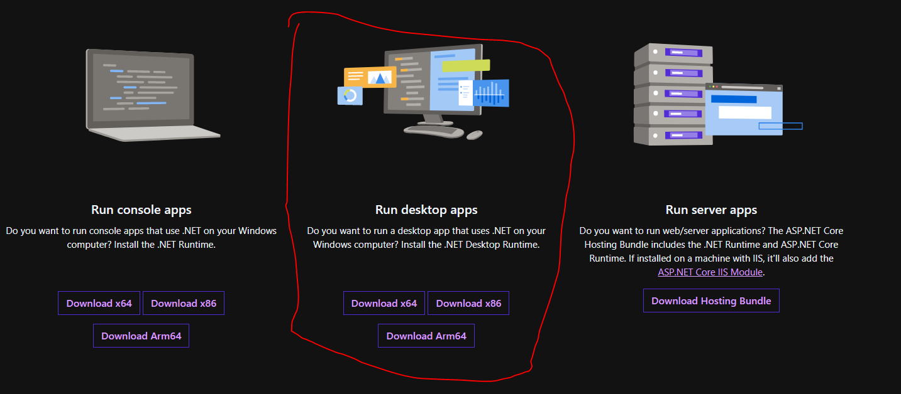

Tout d'abord il faut commencer par extraire le fichier
Puis ensuite lancer OtakuEyes.exe
Il faut pas avoir peur l'ordinateur va forcément détecter que c'est un virus car l'application a était coder par moi
Donc lancer l'application quand même is vous voulez la use
Puis en suite il est fort possible que vous devez download .NET 5
Prennez la version Run desktop apps
Voilà vous pouvez lancer l'application normalement